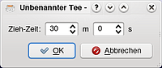
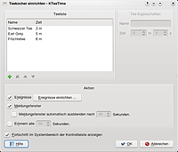

KTeaTime
Dieser Artikel wurde für die folgenden Ubuntu-Versionen getestet:
Ubuntu 14.04 Trusty Tahr
Zum Verständnis dieses Artikels sind folgende Seiten hilfreich:
KTeaTime ist ein kleines nützliches Programm, das sich in den Systemabschnitt der Kontrollleiste von KDE einbettet. Es dient dazu, einen Countdown zu starten, um zum Beispiel benachrichtigt zu werden, wenn der Tee fertig ist. Natürlich kann KTeaTime auch als Countdown für anderes verwendet werden.
Eine Alternative für speziell für die Desktop-Oberfläche Unity bietet Teatime  .
.
Installation¶
Folgendes Paket muss installiert [1] werden:
kteatime (universe)
 mit apturl
mit apturl
Paketliste zum Kopieren:
sudo apt-get install kteatime
sudo aptitude install kteatime
Benutzung¶
KTeaTime startet man über "Dienstprogramme -> KTeaTime (Teekocher)" [3]. Nun erscheint ein kleines Teetassensymbol im Systemabschnitt der Kontrollleiste.
Über das Kontextmenü kann nun ein Countdown gestartet werden. Dabei gibt es die Tees "Schwarzer Tee", "Earl Grey" und "Früchtetee" in der Auswahl. Durch einen Klick auf einen der Tees wird der Countdown gestartet. Nun wird das Symbol animiert, um anzuzeigen, wie lange der Tee noch ziehen muss. Durch einen Klick auf das Symbol wird die genaue Restziehzeit angezeigt. Über das Kontextmenü  kann der Countdown wieder angehalten werden.
kann der Countdown wieder angehalten werden.
 Möchte man eine nicht vordefinierte Laufzeit haben, so kann man im Kontextmenü den Punkt "Anderer..." auswählen. Nun kann man die genaue Zeit selbst in Minuten und Sekunden festlegen.
Sobald ein Tee fertig gezogen hat, also der Countdown abgelaufen ist, wird man sowohl über einen Klang als auch über ein Meldungsfenster darüber informiert.
Einstellungen¶
  Über das Kontextmenü des Icons im Systemabschnitt der Kontrollleiste können über den Menüpunkt "Einrichten..." auch Einstellungen vorgenommen werden. Es gibt eine "Teeliste", in der alle bisher definierten Tees angezeigt werden. Klickt man einen der Tees an, so kann man in den "Tee-Eigenschaften" den Namen sowie die Ziehzeit konfigurieren. Unterhalb der "Teeliste" gibt es einige Schaltflächen, mit denen man einen bestehenden Tee entfernen kann oder in der Liste nach oben oder unten verschieben kann. Über das Plussymbol kann man einen weiteren Tee der Liste hinzufügen und anschließend konfigurieren.
Über das Kontextmenü des Icons im Systemabschnitt der Kontrollleiste können über den Menüpunkt "Einrichten..." auch Einstellungen vorgenommen werden. Es gibt eine "Teeliste", in der alle bisher definierten Tees angezeigt werden. Klickt man einen der Tees an, so kann man in den "Tee-Eigenschaften" den Namen sowie die Ziehzeit konfigurieren. Unterhalb der "Teeliste" gibt es einige Schaltflächen, mit denen man einen bestehenden Tee entfernen kann oder in der Liste nach oben oder unten verschieben kann. Über das Plussymbol kann man einen weiteren Tee der Liste hinzufügen und anschließend konfigurieren.
Auch die Aktionen zur Benachrichtigung können festgelegt werden. Über die Schaltfläche "Ereignisse einrichten..." kann man einstellen, welche Audiodatei abgespielt werden soll, sobald der Tee fertig ist. Außerdem kann man festlegen, ob ein Meldungsfenster angezeigt werden soll und ob dieses automatisch nach einer bestimmten Zeit ausgeblendet werden soll.
 - grafische Erinnerungsfunktion, als GTK- und Qt-Version
- grafische Erinnerungsfunktion, als GTK- und Qt-Version- Erstellt mit Inyoka
-
 2004 – 2017 ubuntuusers.de • Einige Rechte vorbehalten
2004 – 2017 ubuntuusers.de • Einige Rechte vorbehalten
Lizenz • Kontakt • Datenschutz • Impressum • Serverstatus -
Serverhousing gespendet von